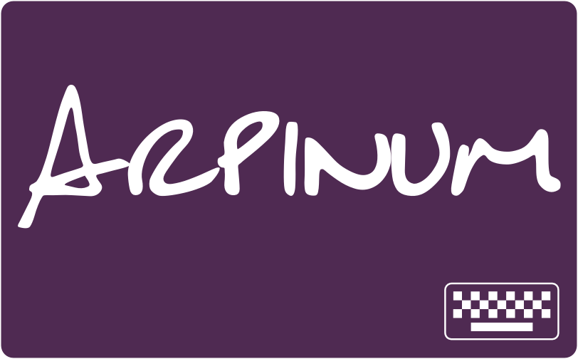
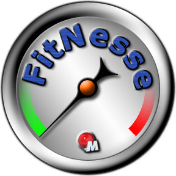

Tests agiles
Différents types de tests

Répartition

Le coût de ne pas tester
Le coût de ne pas tester
Tests d'acceptation
Le but
- Réfléchire sur le besoin
- Tester automatiquement
Plus que des tests…
Une spécification exécutable
Plus qu'une spécification
Des exemples
Décrivez des exemples précis, et les développeurs pourront en déduire les règles, c'est leur travail.
La proposition
Fitnesse
C'est quoi ?
- Un wiki pour écrire des tests et les exécuter
- Un moteur pour faire tourner les tests : Slim
- Un outil pour les non développeurs pour exprimer leurs attentes
Fitnesse
Ce n'est pas
- Un outil pour faire des tests à travers l'interface utilisateur
- Un remplaçant des tests unitaires
Un exemple
Quand écrire ces tests
Idéalement juste à temps : au début de l'itération, au planning, etc
Qui doit écrire ces tests
- binôme testeur développeur,
- binôme testeur, experte métier,
- binôme expert métier, développeur
- trinôme testeur, expert métier, développeur,
Combien doit on en écrire
Pas trop